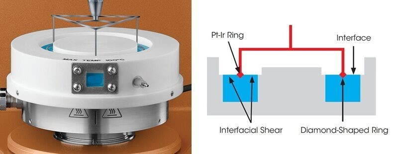
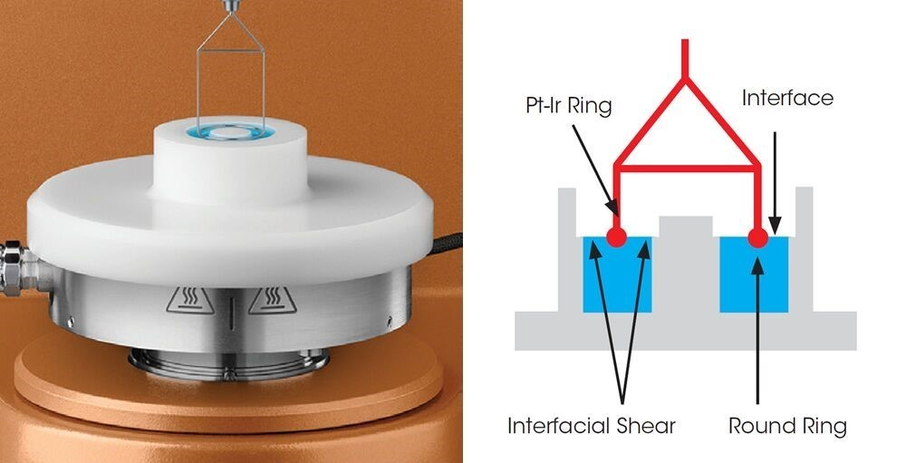
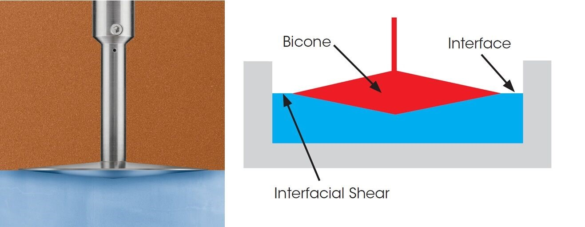
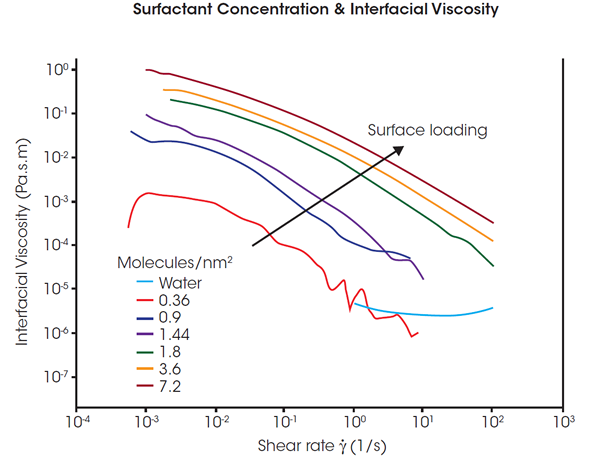

Rheometers are typically used for measuring bulk or three-dimensional properties of materials. In many materials, such as pharmaceuticals, foods, personal care products and coatings, there is a two-dimensional liquid/liquid or gas/liquid interface with distinct rheological properties.
Only TA Instruments offers a choice of different devices for the most flexibility and widest range of quantitative interfacial rheology measurements. The options include a patented Double Wall Ring (DWR) system for quantitative viscosity and viscoelastic information over the widest measurement ranges, a Double Wall Du Noüy Ring (DDR) for samples available in limited volumes, and a traditional Bicone for interfacial viscosity measurements.
The new Interfacial Exchange Cell accessory further expands the capabilities of the DWR geometry through a controlled exchange of the sub-phase composition during interfacial measurements.
Double Wall Ring

The Double Wall Ring (DWR) is the most sensitive interfacial rheology geometry and is capable of truly measuring quantitative viscoelastic parameters. This patented ultra-low inertia ring (1) features a diamond shaped cross-section to “pin” the interface to the ring. Together, the large diameter and narrow cross-section minimize subphase drag.
The low inertia design assures the best oscillation measurements over the widest frequency range of any interfacial system. As a result, surface viscosity measurements as low as 10-5 Pa.s.m are possible without complicated corrections.
Unlike competitive offerings, the DWR does not require additional experiments or mathematical manipulation to account for the torque contributions from the individual phases of the interfacial system.
(1) U.S. Patent # 7,926,326
Du Noüy ring

The Du Noüy ring geometry of the Double Wall Du Noüy Ring (DDR) is an industry standard device used for surface tension measurements. The round cross-section allows for meniscus formation between the interface and geometry, creating a slight error in the absolute data.
With a much smaller diameter of 20 mm, this system is ideal for testing interfacial properties of samples that are available in very limited quantities, such as biological or pharmaceutical materials. The patented double wall trough (1) provides well-defined interfacial shear planes on both sides of the geometry surface, permitting the characterization of viscoelastic interfaces in both steady shear and oscillatory tests.
(1) U.S. Patent # 7,926,326
Bicone

The Bicone is a double conical stainless-steel geometry with a sharp edge that reproducibly pins the interface. Rheological tests with the bicone require mathematical corrections to account for the drag contributions from the cone surface submerged in the subphase.
The geometry’s large moment of inertia limits measurement capability to interfacial viscosity in steady shear mode, precluding valuable measurements of quiescent structure and elasticity. Well-established in scientific literature, the bicone is appropriate for studying stiff interfaces under steady shear

Shear Thinking Behavior in Interfacial Rheology
In this series of tests, the surfactant SPAN65 was spread evenly at the water-air interface using a solution of SPAN65 in chloroform. After the evaporation of the chloroform, the SPAN65 film deposited on the water was measured using the Double Wall Ring Interfacial accessory. Different loadings of surfactant were tested from 0 (just water, no surfactant layer) to 7.2 molecules per nm2. Continuous shear experiments were performed to measure the interfacial viscosity as a function of shear rate and interfacial concentration.
As expected, the surfactant layer shows significant shear thinning. At high rates, the sub-phase contributions dominate for the loadings less than 1.8 molecules/nm2. Sub-phase correction becomes important below an interfacial viscosity of 10-5 Pa.s.m and the well-defined geometry of the DWR makes these quantitative sub-phase corrections possible. At higher interfacial viscosities, sub-phase contributions are negligible and the correction is unnecessary.